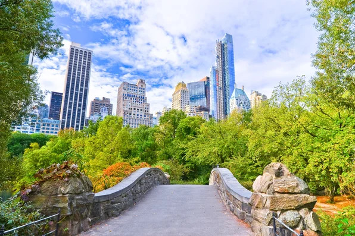

hello welcome to locationsuggestr, the game where you have to find where you are.
basically you are put somewhere randomly on the map and you have to figure out where you
are just through street view. this is DEFINITELY NOT a knockoff of another game. i would never.
game settings
use km instead of mi
truly random locations(i)
globe accurate lines(i)
use google search
[info] truly random locations
when truly random location is disabled, locationsuggestr will pick a random location, and then look at the size of the closest
city/town, and depending on the population it will move the location closer to the larger city.
(warning: disabling truly random location will drastically increase how long it takes to get a location, because of how much it has to do. it also
doesn't really make any sort of noticeable effect on where you're placed. listen, it took me like two days to write all the code for it to
"work", so i'm not getting rid of it)
here's a more in-depth look at how the random location is found:
- the random location that you're put at is determined by taking the (rough) bounds of whatever map (category) you chose,
and picking a random latitude point and random longitude point that is within those bounds.
- then, an algorithm is run to see if the randomly picked coordinates is actually inside of the bounds (for specific maps like USA,
the bounds is the rough shape of the US) and so this algorithm makes sure that it's actually within those bounds.
- if it is, then it moved onto the next step. if it's a specific map (again, like USA or seattle) then it goes and it gets what google
considers to be the address at said coordinates.
- it then checks the address to see if it includes the US or seattle or whatever the category is (sometimes the algorithm doesnt work fully, and it'll
allow coordinates that are in like france or something.)
- if that passes, then it goes and checks with the google street view API to
see if there's a street view panorama within 1000ft (i think feet, it's just a number so i set it to the max which is 1000.) and if so,
then boom its found your location!
- if any of those passes fail, it goes back to the first step and does it all over again
close info
[info] globe accurate lines
when toggled, any lines on the map (like the lines that connect where your guess was and where the real location is)
will follow the curve of the earth (so when its toggled the lines will technically be straight, because they follow the path along
that you would take if you were walking in a straight line between each point)
close info
game categories
click on one to start a game

USA
game subcategories
so that these don't clutter the categories section